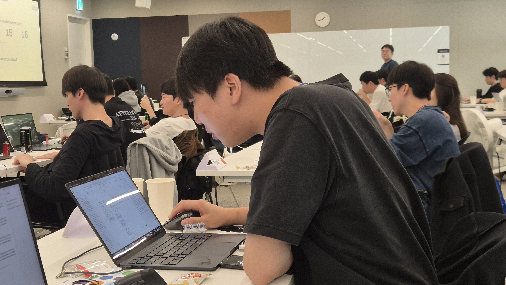
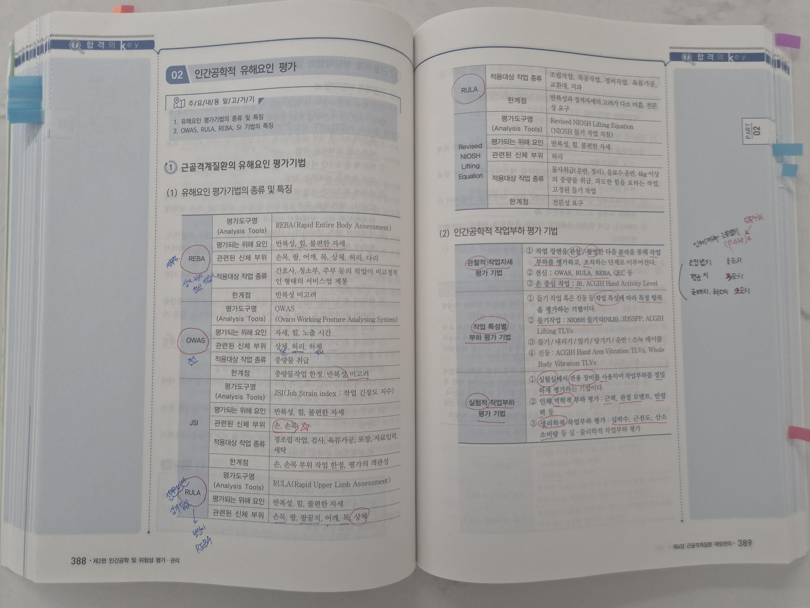
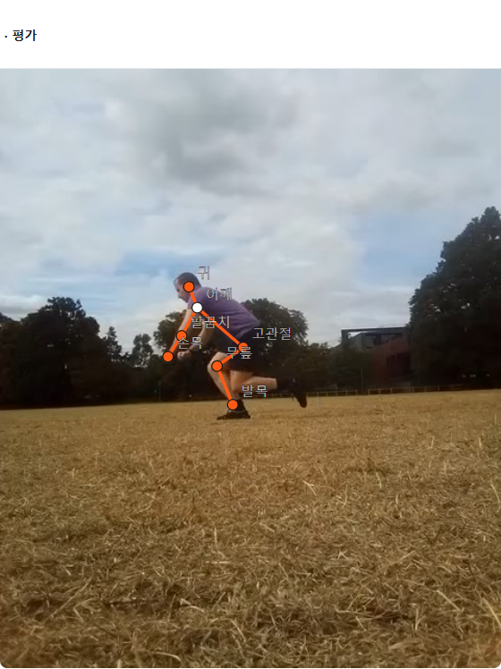
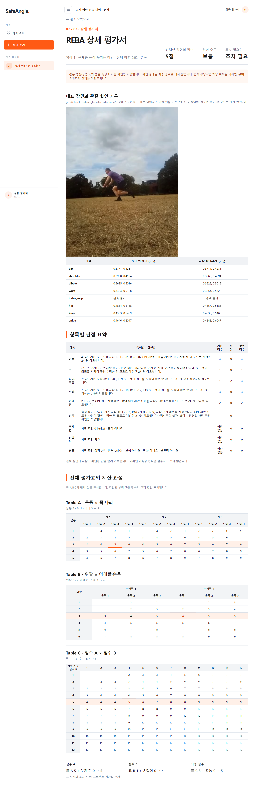

우리에게 익숙한 자세.
누군가에게는
매일 반복하는 작업.
산업 현장 설명용 AI 생성 이미지 · 실제 재해나 위험 등급을 판정한 장면이 아닙니다.
03솔로연합 · AI for Safety & Resilience
자세 확인부터 점수와 평가 근거 정리까지.
고민서 · 임서현 · 한다현
01
해커톤 속 우리의 자세.
산업 현장 설명용 AI 생성 이미지 · 실제 재해나 위험 등급을 판정한 장면이 아닙니다.
032025년 산재 승인 통계
14,185명
전체 질병재해자의 41.9%.
질병재해자 10명 중 약 4명입니다.
고용노동부, 2025년 산업재해 현황 · 승인일 기준 · 전체 질병재해자 33,825명
‘신체부담작업’ 분류이며 자세만의 원인이나 근골격계질환 전체를 의미하지 않습니다.
기업에는, 반복되는 조사 업무.
20.5일
조사 전체 평균 소요기간
2023년 연구, 기간 문항 응답 51개 사업장.
영상 한 편의 채점 시간이 아닌
사업장 조사 전체의 기간입니다.

산업안전보건연구원(2023), 근골격계질환 유해요인조사제도 개선 방안 연구, p.46
사진: 팀 제공 평가기법 학습 자료 · 표본평균이며 전국 사업장 평균을 뜻하지 않습니다.
조사 이후에도 남는 업무
의무
근골격계부담작업이 있는 사업장.
법정 사유 발생 시 수시 조사도 검토.
5년
KOSHA 기술지원규정 기준.
결과와 근거를 장기 관리하는 업무.
안전보건규칙 제657조 · KOSHA GUIDE E-G-1-2025 제10장
5년은 조사 결과·의학적 조치 기록의 기술적 권고입니다. 모든 기록의 법정 보존기간은 아닙니다.
실무자가 감당하는 조사 업무
30.3%
적절한 조사 방법을 모름
어려움 문항 27/89개소
20.5일
사업장 조사 전체 평균 기간
기간 문항 응답 51개소
304.8만원
사업장 조사 전체 평균 비용
비용 문항 응답 44개소
의무적인 정기 조사에, 결과와 근거의 장기 관리까지.
산업안전보건연구원(2023), p.46–47·51–52 · 방법 문항은 복수응답, 문항별 표본은 다릅니다.
기간·비용은 사업장 조사 전체의 표본평균이며 개별 채점 시간·가격이나 전국 평균이 아닙니다.
비용 범위 0–2,000만원, 0원 응답 17개소로 편차가 큽니다.
담당자가 하는 일
01
영상에서
장면 선택
02
목·몸통·팔다리
자세 확인
03
자세·조건을
기준과 대조
04
부위 점수를
표로 조합
05
장면·점수·조건
함께 기록
2023년 연구: 30.3%가 적절한 조사 방법을 모른다고 응답 · 27/89개소, 복수응답
산업안전보건연구원, 유해요인조사제도 개선 방안 연구 p.51–52
제품 안의 AI · OpenAI GPT
대표 장면 JPEG 한 장
선택한 쪽의 8개 관절
보이지 않는 점은 null
이미지에서 관절 좌표 제안
원본 위에서 좌표 확인·수정
목·손목 자세 구간 확인
하중·손잡이·활동 확인
관측과 작업 조건 검토
확인한 좌표로 각도 계산
REBA 표 A·B·C 조회
원 제안·수정·점수 근거 기록
동일 입력에 동일 채점 규칙
gpt-6.1-sol · 대표 장면 한 장만 동의 후 전송 · 필수 입력 미확인 시 확정 점수 없음
확인한 좌표와 작업 조건으로 2차원 자세 평가 · 최종 판단은 담당자
GPT API · VLM 기반 자세 분석
이미지와 지시문을 함께 이해하는
비전언어모델(VLM) 기반 관절 추정

실제 GPT API 응답을 표시한 로컬 화면 · 동의한 대표 장면 한 장으로 관절 좌표 제안
영상: RickyBennison / Wikimedia Commons / CC BY-SA 4.0
SafeAngle · 평가 결과

실제 GPT 연결의 로컬 평가서 · 원 제안과 사람이 확인·수정한 좌표 기록
GPT 원 제안과 사람의 수정값을 구분합니다. 법정 조사 전체를 완료하는 기능은 아닙니다.
초기 고객과 구매 이유
유해요인조사 대행기관
보건관리전문기관
사업장 안전·보건 부서
작업별 평가 과정 정리
점수와 근거를 함께 검토
평가 결과 기록의 일관성
기관 단위 구독을 가정해, 절감 시간과 구매 의향을 검증합니다.
구매·운영 가설: 현장 촬영, 평가자 확인·최종 판단 · 기관 단위 구독 제안
기관의 구매 의향·절감 효과·가격·API 비용은 검증 예정
검증과 개선 · Safety & Resilience
공개 영상 1장면, 같은 요청 3회
검지 MCP는 3회 모두 관측 불가
고관절 좌표는 최대 9.03px 차이
정답 좌표가 없는 반복 실험입니다.
좌표 정확도·정답 일치율은 미검증.
누락은 null, 필요한 조건은 사람 확인
좌표 수정 시 이전 답변·점수 제거
API 오류·관절 전체 누락 시 채점 차단
REBA 표 240칸 대조, 기준 예제 11점
엔진 69개·프론트 상태 8개 테스트 통과 기록
실제 API 반복 응답으로 관측 누락·변동 확인 · 오류·취소는 통제한 시나리오로 검증
필요한 입력이 확인 불가이면 확정 점수 없음 · 현장 정확도·시간 절감·공개 API 배포는 미검증
개발 과정 · Codex
GPT API·입력 검증
관절 좌표 검토 화면
기하·REBA 계산 연결
엔진과 웹을 같은 계약으로 연결
팀 기준표 240칸 대조
실제 API 반복 응답 비교
누락·수정·취소 동작 점검
예외 처리와 초기화 동작 확인
팀 프론트에 GPT 경로 연결
기존 질문·대상자 흐름 보존
테스트·타입·빌드 기록
분담한 화면과 엔진을 통합
개발·검토: Codex · 제품 관절 제안: OpenAI GPT · 역할을 구분해 사용
검토 근거: Codex 개발 기록 · 팀 REBA 기준표 대조 · 실제 GPT API 연결 검증
작업 영상 기반 근골격계 위험 평가
솔로연합 · 고민서 · 임서현 · 한다현
15